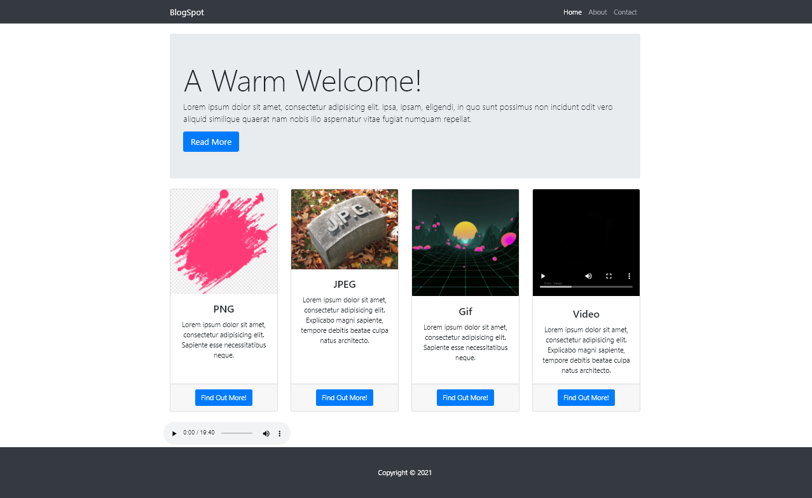

Multimedia
A simple page made with html css javascript and php
to show the different types of multimedia
it contains mp3 , mp4 ,png ,jpeg ,gif and txt
it has an about page as well as a contact page from where to save messages
Technologies:
- -HTML
- -CSS
- -Bootstrap
- -PHP
- -JavaScript
Home
